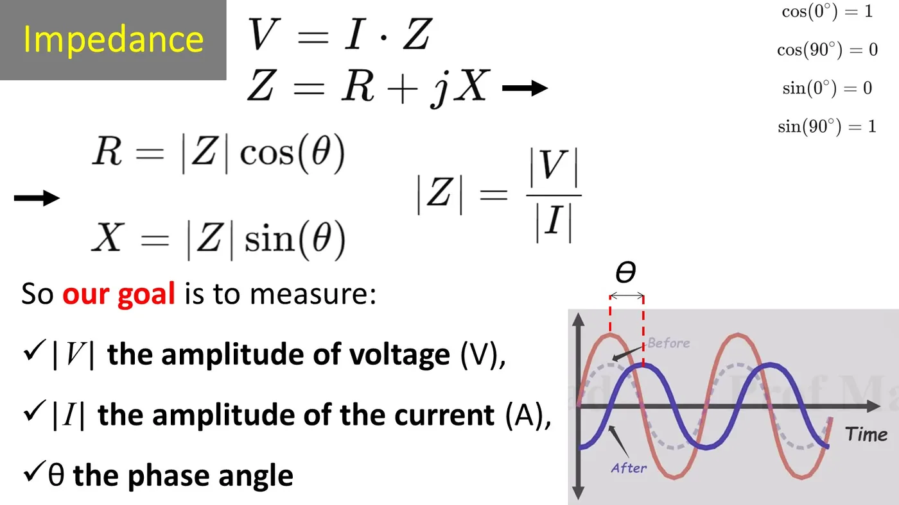
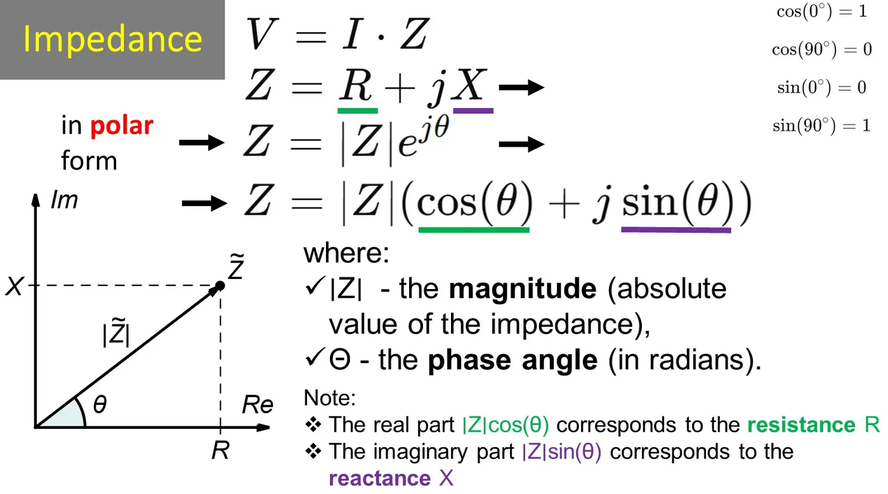
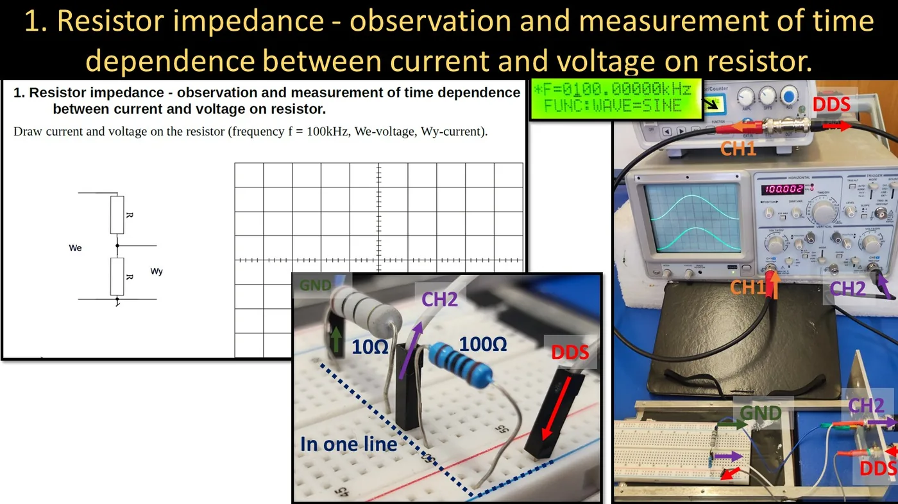
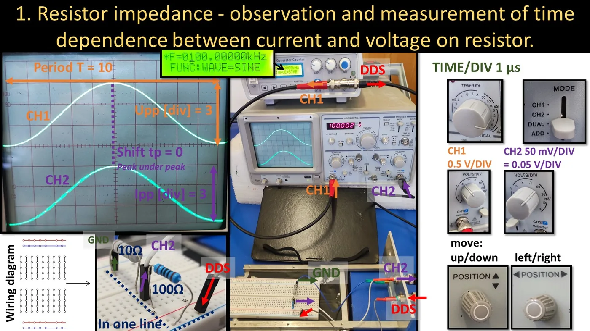
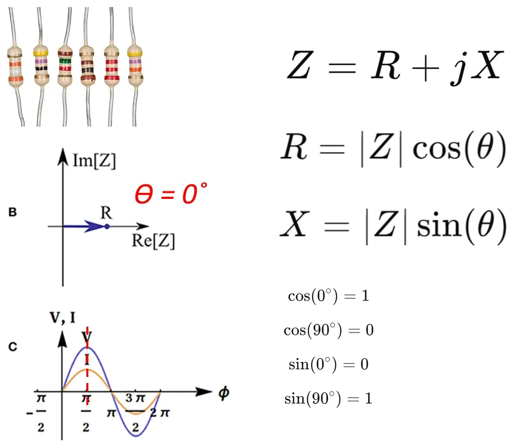
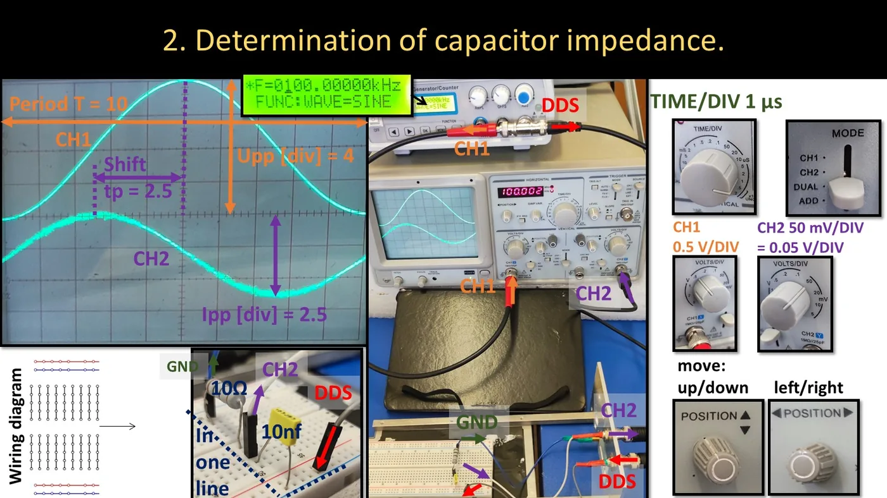
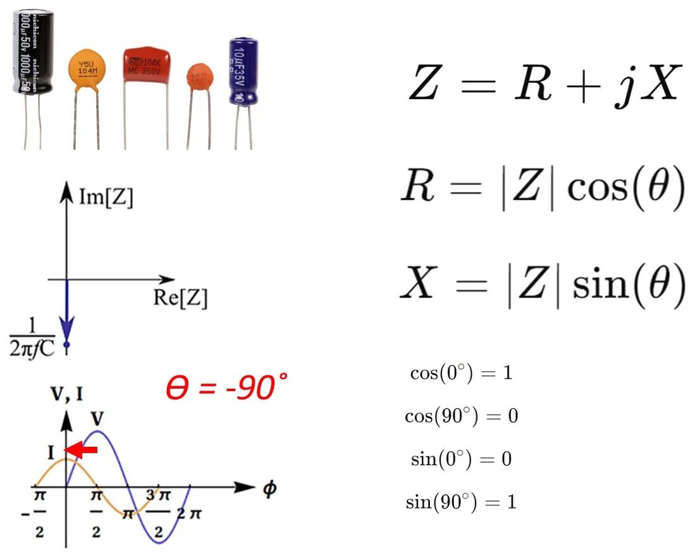
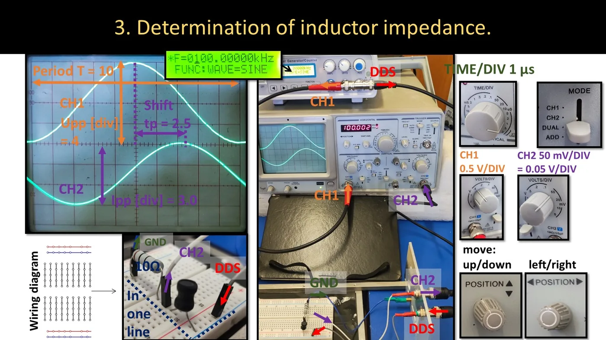
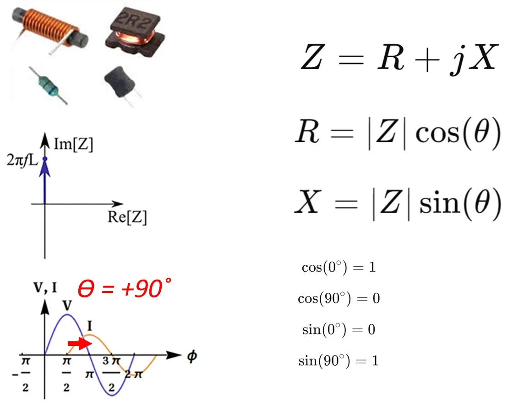

What you need to know before the class
- What impedance, reactance and phase are — lecture 2 (Quick summary).
- How to read an amplitude and a period from the oscilloscope — lab 1.
- On your calculator: sine and cosine in degrees (DEG mode).
From lecture 1 (2026/27)
"You will try to measure and write down the impedance of a capacitor, an inductor and a resistor as a complex number (…) you will be able to touch that complex number in a way, to see that it is not just a mathematical abstraction."
The idea of the measurement
Impedance is Z = UI. The oscilloscope shows a voltage directly. But an oscilloscope does not measure current — so we use a trick: a small 10 Ω resistor is put in series with the component under test and we measure the voltage across it. By Ohm's law the current is that voltage divided by 10 Ω.


We measure three things:
- the voltage amplitude (channel CH1),
- the current amplitude (channel CH2 — the voltage across the 10 Ω resistor, divided by 10),
- the time shift between the two waveforms.


The measuring circuit


Building the circuit (the same for R, C and L)
- On the breadboard place in series ("in one line"): the component under test, followed by the 10 Ω resistor.
- Connect the generator signal (DDS) to the free lead of the component under test.
- Connect ground (GND) to the free lead of the 10 Ω resistor.
- Oscilloscope CH1 — to the point where the generator signal enters (the voltage across the whole circuit).
- Oscilloscope CH2 — to the point between the component under test and the 10 Ω resistor (the voltage across the 10 Ω resistor, i.e. the "current").
- Generator: sine, 100 kHz.
Oscilloscope settings (from the lab materials)
- MODE → DUAL — both channels visible at once.
- TIME/DIV = 1 µs — the period of a 100 kHz signal is 10 µs, exactly 10 divisions.
- CH1: 0.5 V/div, CH2: 50 mV/div (= 0.05 V/div).
- Use the POSITION knobs to separate the traces: CH1 in the upper half of the screen, CH2 in the lower.
- Freeze the picture with LEVEL.
From the site author (not in the lecture)
CH1 measures the voltage across the component under test together with the 10 Ω resistor. The resistor is small, so this is ignored in the report, but it makes |Z| come out slightly too high (most visible with the resistor).
What goes into the report
For each of the three components you fill in the same three parts.
A. Phase shift
T — the period in divisions, tp — the horizontal distance between the voltage peak and the current peak, in divisions.
B. Magnitude of the impedance
C. The impedance as a complex number
Task 1 — the resistor


Example from the lab materials (100 Ω resistor)
- Period T = 10 divisions, shift tp = 0 ("peak under peak") → φ = 0°
- Upp = 3 div · 0.5 V/div = 1.5 V
- UIpp = 3 div · 0.05 V/div = 0.15 V → Ipp = 0.1510 = 0.015 A
- |Z| = 1.50.015 = 100 Ω
- Z = 100 · ej0° = 100 + j · 0 Ω — pure resistance, no reactance.


Task 2 — the capacitor
Replace the 100 Ω resistor with a 10 nF capacitor. The rest of the circuit stays the same.


Example from the lab materials (10 nF capacitor)
- T = 10 divisions, tp = 2.5 divisions → φ = 2.510 · 360° = 90°; the current leads the voltage, so the impedance angle is negative: φ = −90°
- Upp = 4 div · 0.5 = 2 V
- UIpp = 2.5 div · 0.05 = 0.125 V → Ipp = 0.0125 A
- |Z| = 20.0125 = 160 Ω
- Z = 160 · e−j90° = 0 − j · 160 Ω
✚ A check against theory: 12π · 100 000 · 10 × 10−9 = 159 Ω — it matches.


Task 3 — the inductor


Example from the lab materials (inductor)
- T = 10 divisions, tp = 2.5 divisions → 90°; the current lags the voltage, so the angle is positive: φ = +90°
- Upp = 4 div · 0.5 = 2 V
- UIpp = 3.0 div · 0.05 = 0.15 V → Ipp = 0.015 A
- |Z| = 20.015 = 133 Ω
- Z = 133 · e+j90° = 0 + j · 133 Ω


How to tell the sign of the angle
| What you see on the screen | Component | Sign of φ | Notation |
|---|---|---|---|
| peaks at the same place | resistor | 0 | R + j0 |
| the current (CH2) peak earlier — further left | capacitor | − | R − jX |
| the current (CH2) peak later — further right | inductor | + | R + jX |
Tip from the site author
On the screen time runs to the right, so whatever is further left happened earlier. Always compare the peaks nearest to each other. For the drawing in the report, copy both waveforms with T and tp marked — that is graded too.
Practice tasks
The data differs from the class (another frequency and other components). In all tasks the current is measured on a 10 Ω resistor.
1. Component no. 1
Generator: 50 kHz. On the screen: period 8 divisions, both waveforms peak at the same place. CH1: 4.4 divisions at 0.5 V/div. CH2: 4 divisions at 20 mV/div. Find Z. What component is it?
Show solution
φ = 08 · 360° = 0°
Upp = 4.4 · 0.5 = 2.2 V; UIpp = 4 · 0.02 = 0.08 V; Ipp = 0.008 A
|Z| = 2.20.008 = 275 Ω → Z = 275 · ej0° = 275 + j0 Ω
It is a resistor (about 270 Ω; the excess is partly the 10 Ω measuring resistor).
2. Component no. 2
Generator: 50 kHz. Period 8 divisions; the CH2 peak is 2 divisions to the left of the CH1 peak. CH1: 5 divisions at 0.5 V/div. CH2: 3.4 divisions at 50 mV/div. Find Z. What component is it and what is its value?
Show solution
φ = 28 · 360° = 90°; the current comes before the voltage → φ = −90° → a capacitor.
Upp = 2.5 V; UIpp = 3.4 · 0.05 = 0.17 V; Ipp = 0.017 A; |Z| = 2.50.017 = 147 Ω
Z = 147 · e−j90° = 0 − j147 Ω
Capacitance: C = 12πf|Z| = 12π · 50 000 · 147 ≈ 21.7 nF — a 22 nF capacitor.
3. Component no. 3
Generator: 50 kHz. Period 8 divisions; the CH2 peak is 2 divisions to the right of the CH1 peak. CH1: 4 divisions at 0.5 V/div. CH2: 3.8 divisions at 50 mV/div. Find Z and the value of the component.
Show solution
φ = +90° (the current comes later) → an inductor.
Upp = 2.0 V; UIpp = 3.8 · 0.05 = 0.19 V; Ipp = 0.019 A; |Z| = 2.00.019 = 105 Ω
Z = 105 · e+j90° = 0 + j105 Ω
Inductance: L = |Z|2πf = 1052π · 50 000 ≈ 334 µH — an inductor of about 330 µH.
4. A real inductor
For a certain inductor |Z| = 120 Ω was measured, and the shift was 1.5 divisions with a period of 8 divisions (current later). Write the impedance as R + jX. Why is the angle not 90°?
Show solution
φ = 1.58 · 360° = 67.5°
R = 120 · cos 67.5° = 120 · 0.383 = 46 Ω; X = 120 · sin 67.5° = 120 · 0.924 = 111 Ω
Z = 120 · ej67.5° = 46 + j111 Ω
A real inductor is a coil of wire that also has ordinary resistance — hence the non-zero real part and an angle smaller than 90°.
What costs points most often
- Forgetting to divide by 10 Ω (writing a voltage in place of the current).
- Mixing up the channel sensitivities: CH2 is in millivolts per division (50 mV = 0.05 V).
- The calculator in radians instead of degrees.
- No sign on the angle for the capacitor.
- The VAR knob out of CAL, or measuring "zero to peak" in one channel and "trough to peak" in the other — measure both channels the same way (peak to peak).